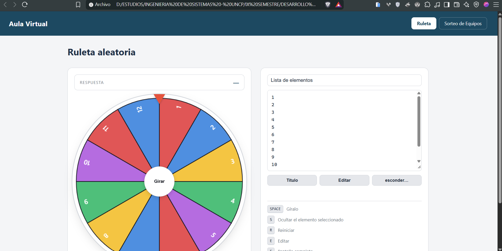
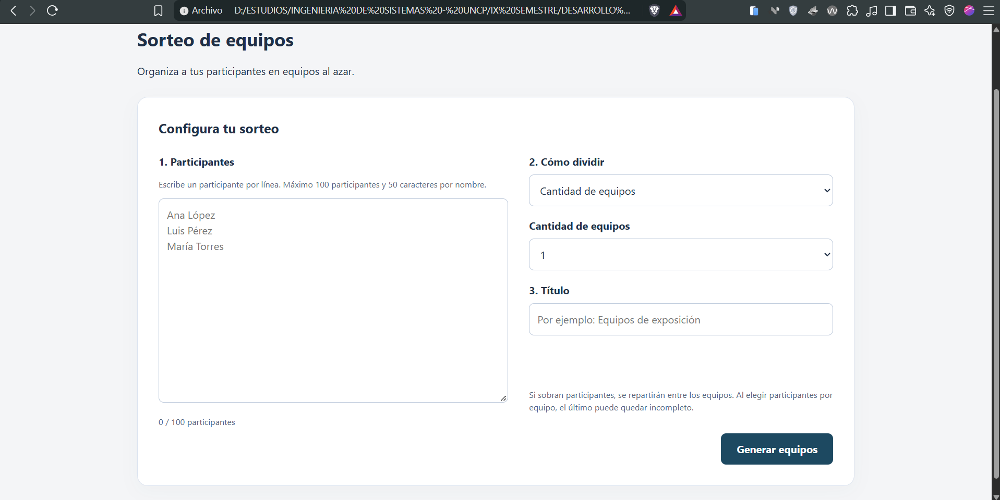
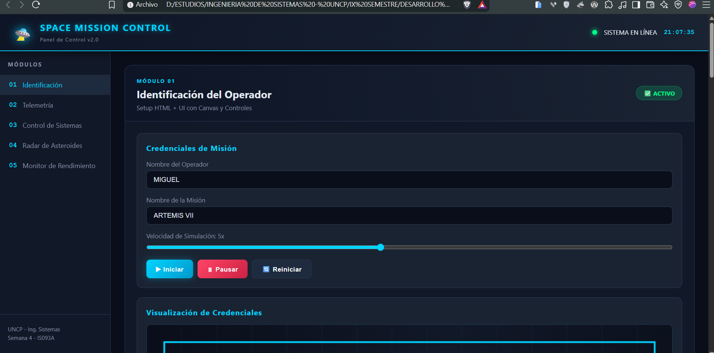
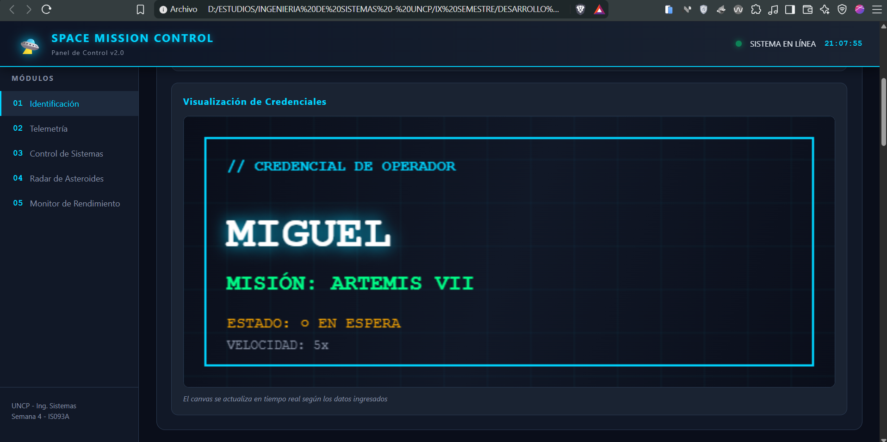
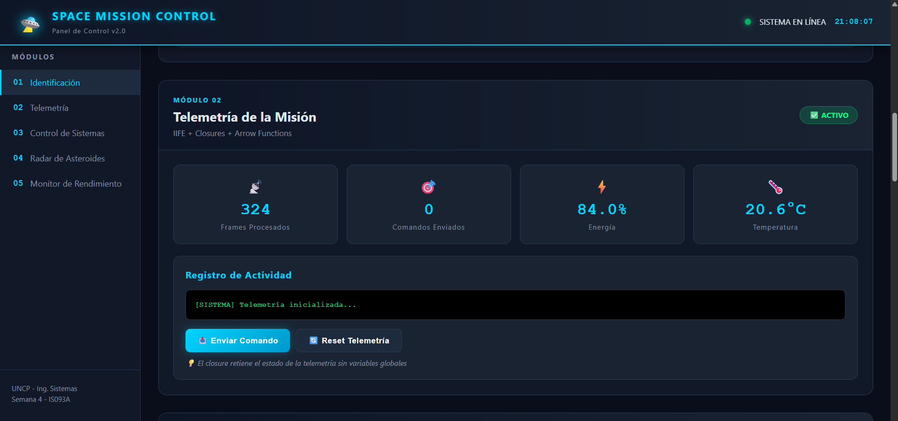
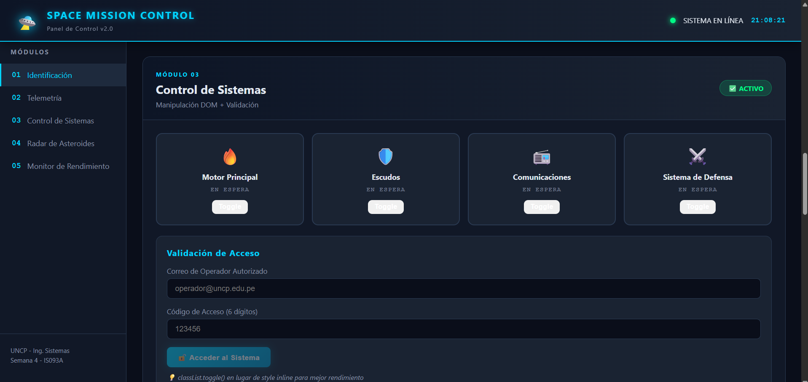
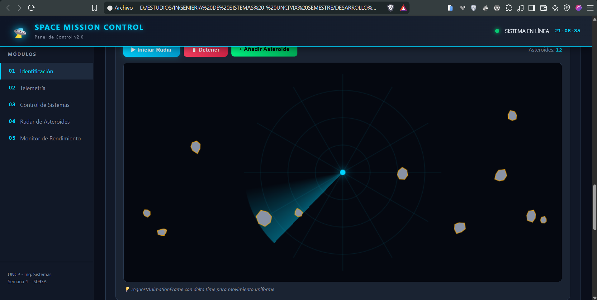

JavaScript es el lenguaje que da comportamiento a la web y se ejecuta en un motor dentro del navegador (por ejemplo V8 en Chrome). TypeScript lo extiende agregando tipos estáticos, de modo que muchos errores se detectan antes de ejecutar el código.
Se declaran con let y const (y el
antiguo var). Los operadores pueden ser
aritméticos, de comparación, lógicos y de asignación.
Números, Strings, Booleanos, Objetos y métodos, además de
otros como null y undefined.
Condicionales (if, switch) y
repetitivas (for, while) para
controlar el flujo del programa.
const nombre = "Angel";
let edad = 22;
for (let i = 0; i < 3; i++) {
console.log(`Vuelta ${i}`);
}
// TypeScript: tipos explícitos
let curso: string = "Aplicaciones Web";
Las funciones agrupan código reutilizable. Se vieron distintas formas de escribirlas e invocarlas:
Declaración con function y llamada con paréntesis.
Funciones sin nombre, usadas como valores o callbacks.
Funciones que se usan como métodos de un objeto.
Sintaxis corta con =>.
Se ejecutan en el mismo momento en que se definen (IIFE).
Una función que recuerda las variables del ámbito donde nació.
const sumar = (a, b) => a + b;
(function () {
console.log("Me ejecuto sola");
})();
function contador() {
let n = 0;
return () => ++n; // closure
}
Con JavaScript se puede leer y modificar el DOM: seleccionar elementos, cambiar su contenido y estilos, y responder a eventos del usuario.
getElementById, querySelector,
textContent, addEventListener.
Crear elementos con createElement y cambiar
estilos con style o classList.
const titulo = document.querySelector("h1");
titulo.textContent = "Hola DOM";
titulo.style.color = "#00d4ff";
El elemento <canvas> es un lienzo donde se dibuja
con JavaScript. Al redibujar cuadro por cuadro se logran
animaciones.
const ctx = canvas.getContext("2d");
let x = 0;
function animar() {
ctx.clearRect(0, 0, canvas.width, canvas.height);
ctx.fillRect(x, 50, 40, 40);
x += 2;
requestAnimationFrame(animar);
}
animar();


En el laboratorio se aplicó JavaScript sobre el DOM y el Canvas para el Laboratorio 04: desarrollo de una animación con JavaScript.
Variables, funciones y estructuras de control aplicadas al ejercicio.
Selección de elementos y cambio de contenido y estilos desde JavaScript.
Desarrollo de una animación con JavaScript usando Canvas.





Aprendí los fundamentos de JavaScript (variables, tipos, control de flujo y funciones), la idea de TypeScript como JavaScript con tipos, y cómo manipular el DOM y dibujar en un Canvas para crear una animación.
Con la exposición teórica del docente y practicando en el laboratorio: escribiendo el código, probándolo en el navegador y corrigiendo los errores que iban apareciendo.
Para dar interactividad a las páginas web. Sin JavaScript una página es solo contenido estático; con él puedo reaccionar a lo que hace el usuario y actualizar la interfaz.
Entender conceptos como los closures y el orden en que se ejecuta el código al animar fueron los puntos más retadores.
Repitiendo los ejemplos, revisando la consola del navegador y consultando la documentación de JavaScript.
En mis proyectos fullstack, para el comportamiento del frontend, y como base para aprender un framework como React en las próximas semanas.